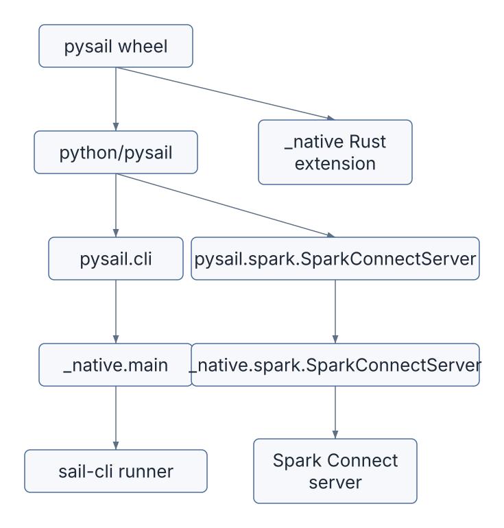
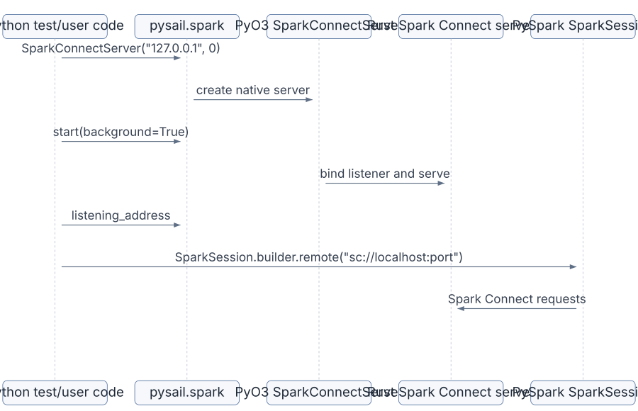
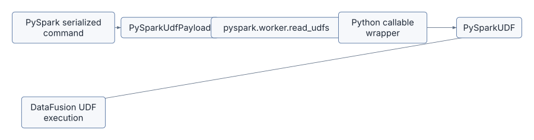
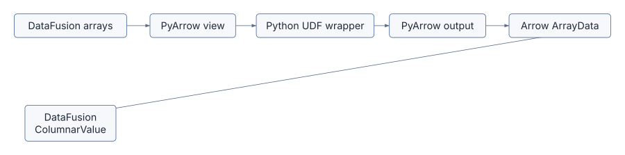
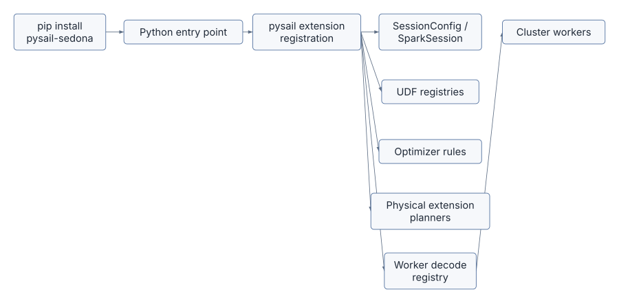

PySpark is the user experience Sail tries to preserve.
pysail is the Python package that makes Sail feel like
something a Python developer can install, start, test, and use from
ordinary PySpark code.
The design is intentionally asymmetric:
PySpark remains the client API.
pysail starts and packages the Rust engine.
Spark Connect is the wire protocol between them.That is why Sail can claim that no PySpark code rewrites are needed
once the user connects to a Sail server. A PySpark program still imports
pyspark.sql.SparkSession; the difference is the remote
URL:
from pyspark.sql import SparkSession
spark = SparkSession.builder.remote("sc://localhost:50051").getOrCreate()
spark.sql("SELECT 1 + 1").show()The official PySpark entry point for this is SparkSession.builder.remote.
Sail’s job is to provide a compatible Spark Connect server at that
address.
| File | Role |
|---|---|
pyproject.toml |
Python package metadata, build backend, optional dependencies, test matrices |
python/pysail/spark/__init__.py |
Public Python wrapper for SparkConnectServer |
python/pysail/cli.py and
python/pysail/__main__.py |
Python entry points into the Sail CLI |
crates/sail-python/src/lib.rs |
PyO3 _native module registration |
crates/sail-python/src/spark/server.rs |
Native Python class that starts the Spark Connect server |
crates/sail-python/src/globals.rs |
Global runtime, config, telemetry, and environment snapshot |
crates/sail-python-udf/* |
Python UDF, UDAF, UDTF, Pandas, and Arrow execution support |
crates/sail-plan/src/resolver/expression/udf.rs |
Converts Spark Connect inline Python UDFs into DataFusion UDF expressions |
python/pysail/tests/spark/conftest.py |
How Sail’s own tests create a PySpark client connected to Sail |
The code divides into two worlds:
User-facing Python package:
pysail, pysail.spark, sail CLI
Engine-facing Rust/PyO3 bindings:
_native module, SparkConnectServer, Python UDF runtimeThe Python package is defined in pyproject.toml.
It is named pysail, supports Python
>=3.10,<3.15, and is built with maturin.
That tells you the package is not pure Python. It ships a compiled Rust
extension module:
[build-system]
requires = ["maturin>=1.0,<2.0"]
build-backend = "maturin"The package entry point is:
[project.scripts]
sail = "pysail.cli:main"So the installed sail command is a Python console
script, but the Python script immediately delegates to Rust:
from pysail import _native
def main():
_native.main(sys.argv)The native module is built by
crates/sail-python/src/lib.rs:
#[pymodule]
fn _native(m: &Bound<'_, PyModule>) -> PyResult<()> {
flight::register_module(m)?;
spark::register_module(m)?;
m.add_function(wrap_pyfunction!(cli::main, m)?)?;
m.add("_SAIL_VERSION", env!("CARGO_PKG_VERSION"))?;
Ok(())
}That module exposes:
pysail._native.mainpysail._native.spark.SparkConnectServer_SAIL_VERSIONThe package layout is a useful lesson in Rust/Python hybrid projects:

The public Python wrapper is tiny:
class SparkConnectServer:
def __init__(self, ip: str = "127.0.0.1", port: int = 0) -> None:
self._inner = _native.spark.SparkConnectServer(ip, port)
def start(self, *, background=True) -> None:
self._inner.start(background=background)
def stop(self) -> None:
self._inner.stop()
@property
def listening_address(self) -> tuple[str, int] | None:
return self._inner.listening_addressThe real work happens in Rust, in
crates/sail-python/src/spark/server.rs.
The PyO3 class:
AppConfigThe most important method is start:
let listener = self
.runtime
.primary()
.block_on(TcpListener::bind(address))?;
self.state = Some(self.run(listener)?);If the user passes port 0, the OS chooses an available
port. The actual address is exposed through
listening_address. Sail’s tests use exactly that:
server = SparkConnectServer("127.0.0.1", 0)
server.start(background=True)
_, port = server.listening_address
yield f"sc://localhost:{port}"
server.stop()That is the local development loop in one picture:

crates/sail-python/src/globals.rs contains
GlobalState.
This is where pysail creates a global Sail runtime and
initializes telemetry. It uses PyOnceLock so initialization
happens once per Python interpreter:
static GLOBALS: PyOnceLock<GlobalState> = PyOnceLock::new();GlobalState contains:
RuntimeManagerEnvironmentSnapshotThe environment snapshot matters because Sail configuration is
environment-variable driven. Some environment variables are effectively
static once the runtime and telemetry have been initialized. If they
change afterward, pysail warns that the changes are
ignored.
This is one of those systems details that looks small but saves debugging time. Python users often set environment variables inside notebooks or test processes. Sail has to explain when that is too late.
import pysail._native
-> load AppConfig
-> create runtime
-> initialize telemetry
-> snapshot Sail environment variablesWhen Python calls into Rust and Rust blocks, Python’s global interpreter lock can prevent other Python code from running. That is dangerous for Sail because Python UDFs may need to run while the server is active.
The server code explicitly uses Python::detach.
In SparkConnectServerState::wait, the comment says the
method should be called within Python::detach; otherwise,
the GIL is not released and Python UDFs will be blocked when the server
handles client requests.
The blocking CLI path does the same:
py.detach(move || {
sail_cli::runner::main(args)
})This is an important Rust/Python boundary rule:
Long-running Rust server work should not hold the Python GIL.Without that, Sail could start fine and then mysteriously deadlock or starve Python UDF execution.
Sail’s own tests show the intended user pattern in
python/pysail/tests/spark/conftest.py:
spark = SparkSession.builder.remote(remote).getOrCreate()Then the test fixture configures the session:
session.conf.set("spark.sql.session.timeZone", "UTC")
session.conf.set("spark.sql.ansi.enabled", "true")
session.conf.set("spark.sql.execution.arrow.pyspark.enabled", "true")These are ordinary PySpark calls. They go through Spark Connect and reach Sail’s config/session machinery. The fixture then tests Sail through the normal PySpark surface: SQL, DataFrames, functions, catalog calls, writes, UDFs, streaming, and lakehouse features.
The official PySpark reference documents the broader Spark SQL API at pyspark.sql, and the main API index notes that Spark SQL, Structured Streaming, and DataFrame-based MLlib support Spark Connect through the Python API surface.
The user sees:
spark.range(10).where("id % 2 = 0").count()Sail sees:
Spark Connect relation tree
-> Sail spec
-> DataFusion logical plan
-> DataFusion physical plan
-> Arrow result batchesThis is subtle but central. pysail does not replace
PySpark classes like DataFrame, Column, or
SparkSession. It starts a server that PySpark can talk
to.
That means compatibility is mostly tested at the protocol/API behavior level:
This is why the test dependencies include
pyspark[connect] in development and multiple Spark versions
in test matrices:
[[tool.hatch.envs.test.matrix]]
spark = ["3.5.7", "4.0.1", "4.1.1"]The engine is Sail. The client is still PySpark.
PySpark UDFs are user-provided Python functions. In Spark Connect, the function is serialized into the request and sent to the server.
Sail resolves those inline Python UDFs in
crates/sail-plan/src/resolver/expression/udf.rs.
The resolver receives a
spec::CommonInlineUserDefinedFunction, extracts:
Then it builds a PySparkUdfPayload and wraps it in a
DataFusion ScalarUDF or AggregateUDF.
For scalar UDFs:
let udf = PySparkUDF::new(
PySparkUdfKind::Batch,
get_udf_name(name, &payload),
payload,
deterministic,
input_types,
function.output_type,
self.config.pyspark_udf_config.clone(),
);
Ok(Expr::ScalarFunction(expr::ScalarFunction {
func: Arc::new(ScalarUDF::from(udf)),
args: arguments,
}))For grouped aggregate UDFs, Sail creates a
PySparkGroupAggregateUDF and returns a DataFusion aggregate
expression.
The key idea is:
Python function payload
-> Sail UDF payload
-> DataFusion ScalarUDF/AggregateUDF
-> executable physical planThe official PySpark UDF APIs are:
pyspark.sql.functions.udfpyspark.sql.functions.pandas_udfpyspark.sql.functions.udtfpyspark.sql.DataFrame.mapInArrowcrates/sail-python-udf/src/udf/pyspark_udf.rs defines
the scalar UDF kinds Sail supports:
pub enum PySparkUdfKind {
Batch,
ArrowBatch,
ScalarPandas,
ScalarPandasIter,
ScalarArrow,
ScalarArrowIter,
}The resolver maps Spark eval types to these internal UDF kinds:
| Spark/PySpark style | Sail internal kind | Python-side data shape |
|---|---|---|
| regular row-oriented UDF | Batch |
Python values |
| Arrow-optimized batch UDF | ArrowBatch |
Arrow-backed batches |
| Pandas scalar UDF | ScalarPandas |
pandas.Series |
| Pandas scalar iterator UDF | ScalarPandasIter |
iterator of pandas.Series |
| Arrow scalar UDF | ScalarArrow |
pyarrow.Array |
| Arrow scalar iterator UDF | ScalarArrowIter |
iterator of pyarrow.Array |
The official PySpark docs describe these APIs from the user’s point of view. Sail’s code answers the engine question: what kind of object should DataFusion execute when such a function appears in a query plan?
crates/sail-python-udf/src/cereal/pyspark_udf.rs handles
the serialized UDF payload format.
The payload builder writes:
The payload loader calls into PySpark internals:
let serializer = PyModule::import(py, intern!(py, "pyspark.serializers"))?
.getattr(intern!(py, "CPickleSerializer"))?
.call0()?;
let tuple = PyModule::import(py, intern!(py, "pyspark.worker"))?
.getattr(intern!(py, "read_udfs"))?
.call1((serializer, infile, eval_type))?;This is not an accident. To be compatible with PySpark UDF behavior, Sail reuses PySpark’s own worker deserialization conventions. It wants the same Python wrapper behavior Spark users expect.

PySparkUDF implements DataFusion’s
ScalarUDFImpl.
When DataFusion invokes it, Sail:
ColumnarValue arguments into Arrow
arrays.ArrayData.The core execution path is:
let args: Vec<ArrayRef> = ColumnarValue::values_to_arrays(&args)?;
let udf = Python::attach(|py| self.udf(py))?;
let data = Python::attach(|py| -> PyUdfResult<_> {
let output = udf.call1(py, (args.try_to_py(py)?, number_rows))?;
Ok(ArrayData::try_from_py(py, &output)?)
})?;
let array = cast(&make_array(data), &self.output_type)?;
Ok(ColumnarValue::Array(array))That differs from JVM Spark. In JVM Spark, Python UDF execution typically involves a Python worker process and serialization between JVM and Python. Sail’s Python UDF runs in the same process as the Rust execution engine, and Arrow memory can be shared through PyArrow bindings.
The Sail UDF performance docs summarize the motivation: use Pandas or Arrow UDFs when possible so wrapper overhead is amortized over batches, and use Arrow-native UDFs for the most direct Arrow sharing.

The Python helper module embedded in Rust is
crates/sail-python-udf/src/python/spark.py.
It contains conversion wrappers for:
The Rust side loads that Python code from an embedded string:
const MODULE_SOURCE_CODE: &str = include_str!("spark.py");Then PySpark::module initializes it once through a
PyOnceLock.
This is a nice pattern: Sail can ship its Python-side UDF helpers inside the Rust extension module, so it does not need to locate a separate Python file at runtime.
PySparkUdfConfig captures the Spark/PySpark settings
that affect Python UDF behavior:
It can also emit key-value pairs that PySpark’s worker code understands:
"spark.sql.session.timeZone"
"spark.sql.execution.arrow.maxRecordsPerBatch"
"spark.sql.execution.pyspark.binaryAsBytes"This shows another compatibility layer. The same Python function may behave differently depending on Spark configuration. Sail has to carry those settings from Spark Connect session state into the UDF payload and wrapper.
PySpark UDTFs can have an analyze static method. The
official udtf
documentation describes this as Python-side analysis that can return a
dynamic schema.
Sail has hooks for this in
crates/sail-python-udf/src/python/spark.rs:
pub fn analyze_udtf<'py>(
py: Python<'py>,
handler: Bound<'py, PyAny>,
arguments: Bound<'py, PyAny>,
) -> PyResult<Bound<'py, PyAny>> {
Self::module(py)?
.getattr(intern!(py, "analyze_udtf"))?
.call1((handler, arguments))
}This matters because analysis happens before physical execution. A UDTF may determine its output schema from argument types or literal values. That means Python code can participate in planning, not just execution.
For the extension proposal, this is a preview of a broader rule:
Extensions may need hooks before execution starts.Spark Connect can register Python data sources. Sail handles
RegisterDataSource in
crates/sail-spark-connect/src/service/plan_executor.rs.
The handler extracts the pickled Python data source class and
registers a session-scoped PythonTableFormat in the
TableFormatRegistry:
let format = Arc::new(PythonTableFormat::with_pickled_class(name.clone(), command));
registry.register(format)This is parallel to Python UDF registration:
Python behavior arrives through Spark Connect
-> Sail stores it in session-scoped registry
-> later scans can resolve and execute itThe important architectural point is session isolation. A registered Python data source belongs to that session’s table format registry, not a global singleton shared by all users.
Sail’s Python tests are themselves a guide to compatibility.
The fixture in python/pysail/tests/spark/conftest.py
either uses SPARK_REMOTE or starts a local Sail Spark
Connect server. Then it creates a normal PySpark session:
SparkSession.builder.remote(remote).getOrCreate()The tests cover:
The test matrix explicitly checks different PySpark versions. That is because Spark Connect is a moving protocol and PySpark’s UDF behavior evolves. Sail has to track both API surface and wire behavior.
The UDF payload builder contains version-specific logic:
let pyspark_version = get_pyspark_version()?;
...
if matches!(pyspark_version, PySparkVersion::V4_1)
&& matches!(eval_type, spec::PySparkUdfType::ArrowBatched)
{
let schema_json = build_input_types_json(input_types)?;
...
}That is a concrete example of why “Spark compatible” is not a single target. Spark 3.5, Spark 4.0, and Spark 4.1 differ in function support, UDF payload details, UDTF behavior, Arrow APIs, and type handling.
pyproject.toml reflects this with test dependencies and
test matrices for multiple Spark versions.
Discussion #2001 proposes Python entry points such as:
[project.entry-points."pysail.extensions"]
sedona = "pysail_sedona:register"This is a natural Python packaging experience:
pip install pysail pysail-sedonaThen, when pysail starts, it could discover installed
extension packages and register them.
But this chapter should make the hard parts clear.
First, discovery is Python-level, but most extension hooks are Rust/DataFusion-level:
Python entry point
-> Rust extension registration
-> DataFusion UDFs, optimizer rules, extension planners, codecsSecond, version coupling is strict. A Python wheel that exposes Rust
extension objects must match Sail’s arrow,
datafusion, pyo3, and pysail
versions. Rust trait objects are not a stable plugin ABI across
arbitrary crate versions.
Third, worker execution must see the same extension behavior. Installing an extension in the client Python environment is not enough if cluster workers cannot decode the physical plan or reconstruct extension UDFs.
Fourth, analysis must work too. If a PySpark client asks for schema
or explain output before execution, the extension must be registered
before analyze_plan resolves the query.

The pleasant user story is Pythonic. The engine story is Rust and distributed.
Suppose the user writes:
from pyspark.sql import SparkSession
from pyspark.sql.functions import udf
from pyspark.sql.types import IntegerType
spark = SparkSession.builder.remote("sc://localhost:50051").getOrCreate()
@udf(returnType=IntegerType())
def plus_one(x):
return None if x is None else x + 1
spark.range(3).select(plus_one("id")).show()Sail’s path is:
PySpark creates Spark Connect relation containing inline Python UDF
-> sail-spark-connect converts relation to Sail spec
-> PlanResolver resolves CommonInlineUserDefinedFunction
-> PySparkUdfPayload is built
-> PySparkUDF becomes a DataFusion ScalarUDF
-> DataFusion physical plan executes
-> PySparkUDF invokes Python wrapper in process
-> output Arrow array returns to DataFusion
-> Spark Connect streams ArrowBatch results to PySparkThis is the whole Sail philosophy in miniature: keep the PySpark surface, translate through Spark Connect, execute in Rust/DataFusion/Arrow, and invoke Python only where Python semantics are actually needed.
python/pysail/spark/__init__.py.
listening_address property.crates/sail-python/src/spark/server.rs.
new, start, run, and
stop.Python::detach is used.crates/sail-python/src/globals.rs.
python/pysail/tests/spark/conftest.py.
remote fixture.SparkSession.builder.remote.crates/sail-plan/src/resolver/expression/udf.rs.
ScalarUDF.AggregateUDF.crates/sail-python-udf/src/udf/pyspark_udf.rs.
PySparkUdfKind.invoke_with_args.crates/sail-python-udf/src/cereal/pyspark_udf.rs.
crates/sail-python-udf/src/python/spark.py.
pysail is the Python package that makes Sail usable from
Python, but PySpark remains the primary user API. pysail
starts and packages a Rust Spark Connect server. PySpark connects to
that server using SparkSession.builder.remote.
Python UDF support is where the layers meet most dramatically. PySpark serializes Python functions into Spark Connect plans. Sail turns those payloads into DataFusion UDFs. Execution invokes Python in process and exchanges Arrow memory through PyArrow bridges. Pandas and Arrow UDFs amortize Python overhead over batches, while Arrow-native functions can share Arrow data most directly.
For extensions, Python packaging gives an attractive discovery story, but the actual extension hooks must reach Rust planning, DataFusion execution, and distributed worker decoding. The final extension architecture has to make that Python-to-Rust bridge explicit.
The next chapter moves into Apache Arrow itself: arrays, schemas, record batches, IPC, PyArrow bridges, Arrow Flight, and why columnar memory is the common currency between Spark Connect, DataFusion, Python UDFs, and Sail’s distributed shuffle.